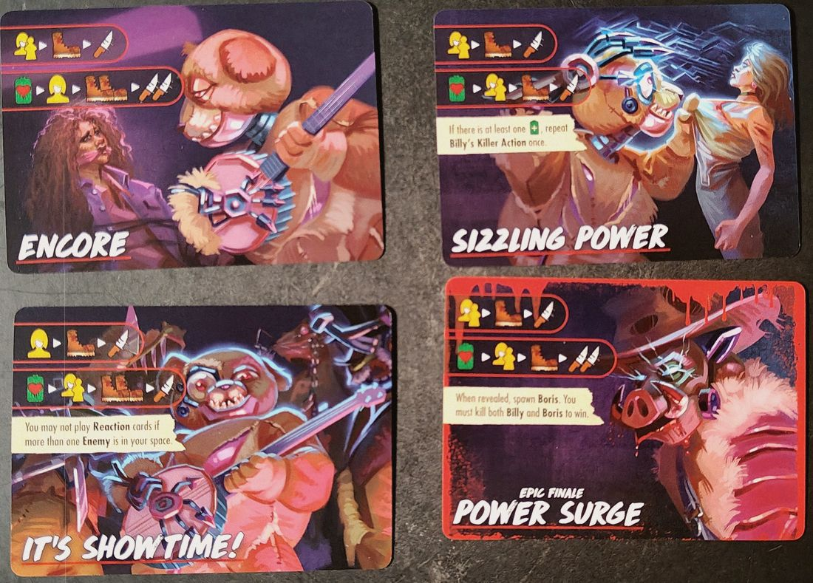
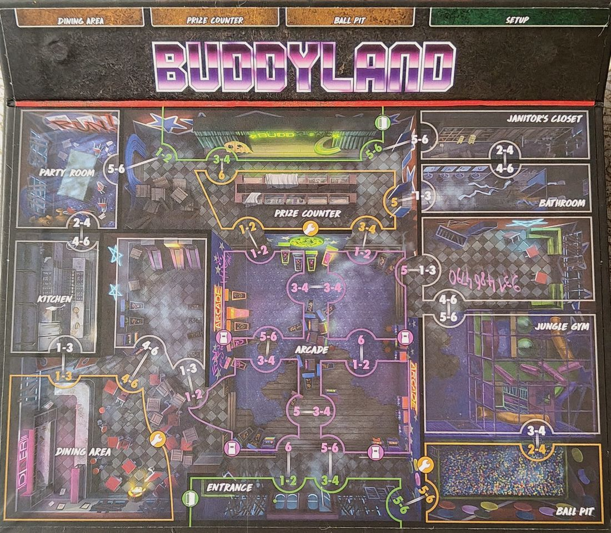

Scatola · S4·F1 · 102 partite
Bad Times at Buddyland56,9% di vittorie
🇪🇸 ES · 🇬🇧 EN · 🇫🇷 FR · 🇩🇪 DE · 🇮🇹 IT
📖 Guida di Billy (killer) · Guida di Buddyland (luogo)
Billy su Buddyland. Su 102 partite registrate si vince nel 56,9% dei casi, 8,4 punti sotto la media del gioco (65,3%).
Cosa la rende particolare
I Buddies sono tirapiedi con salute, iniziativa e attacco propri. Non puoi attaccare Billy mentre un Buddy è sulla sua casella. Si cura sul simbolo del cuore finché 1 delle 4 fonti di energia resta attiva, e puoi spegnerle spendendo tempo. L'epico Finale fa uscire un secondo killer, Boris: devi ucciderli entrambi. Soprannominata "il Camp Happy Trails della Serie 4": un buon banco di prova.
| Livello | Medio |
| La mappa | 4 spazi della sala giochi come punto caldo |
Come funziona Billy
- Movimento base: non si muove nella sua Killer Action; attacca chi si trova nel suo spazio.
- Ha Minions che possono apparire durante la partita e agiscono prima di lui.
- Prima del Finale, dopo i Minions: +1 di vita se una power source è attiva > Target Victim/Final Girl > Strike once.
Riassunto dalla pagina della Final Girl Wiki (CC BY-SA).
La mappa: Buddyland
16 spazi e 2 uscite (nord e sud). Spazi di ricerca: The Ball Pit, Dining Area e Prize Counter; altri spazi con nome: Bathroom, Janitor's Closet, Jungle Gym, Kitchen e Party Room. I 4 spazi centrali formano l'Arcade.
- Gli spazi dell'Arcade, al centro del tabellone, compaiono in vari effetti delle carte.
- I segnalini Power Source si piazzano sul tabellone prima di pescare la carta Setup e compaiono in vari effetti.
- Spegnere i Power Source impedisce a Billy di curarsi.
Riassunto dalla pagina della Final Girl Wiki (CC BY-SA).
Il killer
Billy ha il 58,8% di vittorie su tutte le mappe, su 194 partite. Qui, su Buddyland, la cifra è 56,9%.
Setup
Dal più duro al più facile. Almeno 20 partite.
| Setup | Vittorie | Partite |
|---|---|---|
| Playin' Hooky | 58,8% | 51 |
| Pizza Party | 62,5% | 48 |
| Hide and Seek | 67,3% | 52 |
| Birthday Bash | 68,6% | 51 |
| Buddy Day | 70,6% | 51 |
Tra Playin' Hooky e Buddy Day ci sono 12 punti di differenza. La preparazione iniziale pesa più di quanto sembri.
Dark Powers
| Dark Power | Vittorie | Partite |
|---|---|---|
| Merciless Minions | 46,2% | 26 |
| Endless Power | 54,5% | 44 |
| Deathlust | 58,3% | 36 |
| Introducing... Billy Jr! | 60,3% | 58 |
| Unrevealed | 77,3% | 22 |
Carte Finale
| Carta Finale | Vittorie | Partite |
|---|---|---|
| Power Surge | 39,3% | 28 |
| Encore | 41,0% | 39 |
| Unrevealed | 57,6% | 59 |
| It's Showtime! | 79,3% | 29 |
| Sizzling Power | 80,0% | 30 |
Dove trovarla
Link di affiliazione: se compri, ricevo una piccola commissione senza costi in più per te. Non cambia quello che dicono i dati sopra.
Come iniziare la partita
Le quattro aperture, con quale usare in base alla preparazione, sono nelle strategie di apertura.
📖 Guida di Billy (killer)
Va bene con qualsiasi luogo. ↑ su
⌛ = Tempo · ✴ = danno · ❤️ = salute · 🩸 = Bloodlust · 🎭 = aumenta l'Orrore · ⊘🎭 = la maschera barrata della carta

Attenzione
- Billy non può essere attaccato finché c'è un Buddy nel suo spazio. I Buddy lo proteggono a ogni costo.
- Finché una Power Source è Attiva, l'icona della batteria con il cuore cura Billy di 1 ❤️. Spegnerle è la chiave.
- Un Buddy che compare durante la fase del Killer non si attiva fino alla fase del Killer successiva.
Preparazione speciale
- Prima di rivelare la carta di preparazione, metti 4 segnalini Power Source con il lato Attivo in su (batteria verde con +) in 4 spazi diversi, nessuno adiacente a un altro. Metti da parte il 5°: potrebbe entrare in gioco più avanti.
- Mescola i segnalini del tracciato Bloodlust A e B a faccia in giù, per tipo. Mettine 6 a faccia in giù sulla plancia del Killer, ciascuno nel suo spazio corrispondente per colore e icona. I 2 avanzati (uno per tipo) non si usano né si rivelano.
- Mescola le 5 carte Buddy a faccia in giù: è il mazzo Buddy. Metti da parte le 2 carte Special Buddy: potrebbero entrare più avanti e seguono le stesse regole.
- Fai comparire un Buddy (vedi sotto).
Tracciato Bloodlust
- Quando Bloodlust raggiunge un livello con un segnalino, rivelalo e applica il suo effetto.
Power Source
- Disattivare: gira il segnalino sul lato Inattivo (batteria rossa barrata). Puoi farlo spendendo ⌛ mentre sei nel suo spazio, anche se ci stai solo passando.
- Se una Inattiva viene Attivata, girala di nuovo sul verde.
- Con l'icona della batteria con il cuore, Billy recupera 1 ❤️ se almeno una Power Source è Attiva. Se nessuna lo è, ignorala.
I Buddy
- Sono Scagnozzi e seguono le normali regole degli Scagnozzi (pag. 32 del regolamento base). Ogni carta è un animatronico con salute, attacco e movimento propri.
- Far comparire un Buddy: rivela la prima carta del mazzo, mettici sopra i suoi indicatori di salute e piazza il suo segnalino in uno spazio adiacente a Billy, se possibile senza Buddy. Se Billy non è più in gioco, non compare nulla.
- Attivazione: ogni Buddy ha un numero di Iniziativa (cerchio, in alto a destra). Le Azioni degli Scagnozzi e le carte Terrore si risolvono dall'Iniziativa più bassa alla più alta.
- Uccidere un Buddy: rimuovi il suo segnalino, prendi la Kill Reward indicata sulla carta e rimuovi la carta dal gioco. Se muore fuori dalla fase Azione, prendi la ricompensa all'inizio della fase Azione successiva.
- Esempio: Toby ha 3 ❤️, Iniziativa 1, attacco 1, movimento 1 e Kill Reward 2 ⌛.
I Buddy, uno per uno
- Toby · 3 ❤️ · iniziativa 1 · attacco 1 · movimento 1. Se uccide una Vittima, +🩸. Kill Reward: 2 ⌛.
- Ramey · 2 ❤️ · iniziativa 2 · attacco 1 · movimento 2. Kill Reward: muoviti di 1 spazio.
- Allie · 2 ❤️ · iniziativa 3 · attacco 2 · movimento 1. Kill Reward: ⊘🎭.
- Cam · 2 ❤️ · iniziativa 4 · attacco 1 · movimento 1. Le Vittime non vanno nel panico se Cam è l'unico Nemico nel loro spazio. Kill Reward: prendi una carta Guard.
- Roxy · 1 ❤️ · iniziativa 5 · attacco 1 · movimento 3. Kill Reward: prendi l'Oggetto in cima a un mazzo qualsiasi.
- Billy Jr. (Special Buddy) · 2 ❤️ · iniziativa 6 · attacco 1 · movimento 0. Sempre nello stesso spazio di Billy. Kill Reward: ✴ a Billy.
- Boris (Special Buddy) · 4 ❤️ · iniziativa 7 · attacco 3 · movimento 2. Kill Reward: prendi QUALSIASI carta Azione.
Finali
- Hanno tutti due righe: sopra, Billy prende come bersaglio te o la Vittima più vicina, si muove e attacca; sotto, l'icona della batteria con il cuore e poi sceglie di nuovo il bersaglio.
- Base Finale (l'orso rosa): attacca senza muoversi; sotto, batteria con il cuore, bersaglio e attacco.
- Encore: sotto, si muove due volte e attacca due volte.
- Sizzling Power: se almeno una Power Source è Attiva, ripeti una volta la sua Azione del Killer.
- It's Showtime!: non puoi giocare carte Reazione se nel tuo spazio c'è più di un Nemico.
- Power Surge (Finale Epico): quando viene rivelato, fai comparire Boris. Devi uccidere sia Billy sia Boris per vincere.
Poteri Oscuri
- Introducing... Billy Jr.!: fai comparire Billy Jr. nello spazio di Billy.
- Deathlust: +1 al Movimento e all'Attacco di Billy.
- Endless Power: quando riveli il segnalino Final Health di Billy, rivelane uno in più per ogni Power Source Attiva e applica quello che cura di più.
- Merciless Minions (Potere Oscuro Epico): nell'Azione degli Scagnozzi del Finale, aggiungi un movimento prima dell'attacco.
- Backup Generator (Minore): durante il Mantenimento, Attiva una Power Source Inattiva a tua scelta (se possibile). Se ne è stata Attivata una, rimuovi un ❤️ da questa carta.
- Renewable Energy (Minore): non puoi Disattivare nessuna Power Source.
Le carte Terrore di Billy
- Animatronical: fai comparire un Buddy e pesca la carta Terrore successiva.
- "He's Turning Them Back On!": se non ci sono Power Source Inattive, scarta e pescane un'altra. Altrimenti metti Billy nello spazio più vicino con una Inattiva, Attivala e 🎭.
- "Eyes in the Dark": il Killer prende come bersaglio te (la Final Girl) e si muove due volte; poi 🎭 una volta per ogni Nemico nel tuo spazio e negli spazi adiacenti, fino al numero di Power Source Attive.
- "It's a Short Circuit!": se nessuno spazio con una Power Source Attiva ha Vittime, scarta e pescane un'altra. Altrimenti, in ognuno di quegli spazi con una Vittima, una Vittima viene uccisa, le altre vanno nel panico e quella Power Source viene Disattivata.
- "They're Here for Blood!": se non ci sono Buddy o non ci sono Vittime, scarta e pescane un'altra. Altrimenti, solo i Buddy: bersaglio la Vittima più vicina, movimento e attacco. Se è stata uccisa almeno una Vittima, +🩸.
📖 Guida di Buddyland (luogo)
Va bene con qualsiasi killer. ↑ su

Attenzione
- Buddyland non ha preparazione speciale: le Power Source appartengono a Billy.
Il luogo
- I 4 spazi centrali con l'icona del cabinato sono spazi Arcade. Diverse carte vi fanno riferimento.
- Spazi con nome: Party Room, Kitchen, Dining Area, Entrance, Prize Counter, Arcade, Janitor's Closet, Bathroom, Jungle Gym e Ball Pit. Dining Area, Prize Counter e Ball Pit hanno mazzi Oggetti a lato.
Le carte Terrore di Buddyland
- Hungry for Blood: se non ci sono Vittime in Kitchen, Party Room o Dining Area, scarta e pescane un'altra. Altrimenti metti il Killer in quello con più Vittime; prende come bersaglio una Vittima o te e attacca due volte.
- Panic at the Disco: se non ci sono Vittime negli spazi Arcade, scarta e pescane un'altra. Altrimenti tutte le Vittime in ogni spazio Arcade vanno nel panico; quella che fugge in uno spazio con un Nemico viene uccisa. Se non è stata uccisa nessuna Vittima, +🩸.
- "How'd They Sneak In?": tira 3 dadi e metti una Vittima per dado: 1-2 Jungle Gym, 3-4 Dining Area, 5-6 Party Room. Poi un Evento.
- "They Want Her!": tutte le Vittime nel tuo spazio vanno nel panico, sposta tutti i Nemici di uno spazio verso di te, 🎭 per ogni Nemico nel tuo spazio, poi un Evento.
- "It's Play Time!": tira un dado. 1-3: metti il Killer con il bersaglio più vicino. 4-6: prende come bersaglio una Vittima o te e attacca. Ripeti altre 5 volte; puoi annullare una ripetizione per ogni carta Azione scartata dalla mano, decidendo tutto prima.
Preparazioni
K = partenza del Killer · figura gialla = la Final Girl · numeri = Vittime per spazio.


Oggetti

Arma · gittata 0 · 1 ✴ · 2 mani. Una volta per fase Azione, se sei solo in uno spazio, puoi spendere 2 ⌛ per ⊘🎭.

Metti il segnalino Bot nel tuo spazio. Quando ottieni movimento, puoi usarlo per muovere il Bot invece. Fino a 2 Vittime possono seguire il Bot, e le Vittime su un'uscita con il Bot possono essere salvate.
Quando lo prendi, prendi anche la carta Azione Planning. Le Vittime nel tuo spazio non vanno mai nel panico.

Scarta mentre sei in uno spazio Arcade per spendere 3 ⌛ e ottenere 3 ⊘🎭.

Arma · gittata 0 · 1 ✴ · 2 mani. Contro uno Scagnozzo infliggi invece ✴✴.

Scartala in uno spazio Arcade: +1 🎲 nel risolvere carte Azione per il resto della fase Azione.

1 mano · 2 usi. Quando un Nemico entrerebbe nel tuo spazio, fallo fermare in uno adiacente.

1 mano · 4 usi. Ignora 1 ✴.

Scartala in uno spazio Arcade per guardare gli Oggetti non usati e prenderne uno a scelta.

3 segnalini Marbles. Spendi ⌛ per metterne uno in uno spazio adiacente che non ne ha. Chi entra in uno spazio con Marbles lo scarta e perde 💔.

Scartala nella fase Azione e scegli: 5 ⌛ o muoverti fino a 2 spazi.

2 usi. Usala per ignorare un 🎭 nella fase del Killer.

Arma · gittata 0-1 · 1 ✴ · 1 mano. Quando danneggi un Nemico puoi scartarla per mettere il segnalino Catena nel suo spazio: finché c'è, quel Nemico non può muoversi né attaccare. Rimuovilo alla fine della fase del Killer.

Arma · gittata 0-1* · 1 ✴ · 2 mani. Se sei in uno spazio Arcade o adiacente, puoi attaccare qualsiasi spazio Arcade a prescindere dalla gittata.

2 usi. Nella fase Azione scegli: ⊘🎭 o ❤️❤️.

Arma · gittata 1 · 1 ✴ · 1 mano · 4 usi. Non mettere i 4 segnalini (le Skee-Ball) sulla carta finché non sei in uno spazio Arcade. +1 🎲 quando attacchi con una Skee-Ball.
Eventi di Buddyland
- Birthday Girl
- La Birthday Girl inizia nella Party Room. Se è sola durante la fase Panico, va nel panico. Salvata: 4 ⌛. Uccisa: 🩸.
- Nick the Janitor
- Nick inizia nel Janitor's Closet e può seguirti anche nello spazio del Killer. Quando entra in uno spazio con un Nemico, gli infligge 2 ✴; poi lascia il tabellone e torna nel Closet al prossimo Mantenimento. Ucciso: 2 🩸.
- Sing-A-Long
- A ogni Mantenimento: 🎭. Scarta quando il livello di Orrore raggiunge la zona rossa.
- Pizza Delivery
- La Vittima più vicina all'Entrance è il Pizza Guy. Finché è nel tuo spazio, puoi tirare 2 dadi in più quando risolvi una carta Azione Search. Se viene ucciso, tutte le Vittime nel suo spazio e negli spazi adiacenti vanno nel panico.
- Tragic Collapse
- Tira un dado e metti il segnalino Broken: 1-2 Jungle Gym, 3-4 Kitchen, 5-6 Bathroom. Chi è lì o ci entra dopo subisce ✴.
- Playtime Shenanigans
- Metti 2 nuove Vittime nel Ball Pit e 2 nel Jungle Gym. Scarta.
- Scarta tutti gli Oggetti scoperti dai mazzi Oggetto. Scarta.
- Party Time
- Sposta tutte le Vittime di uno spazio verso la Party Room. Scarta.
- Buddy Up
- Quando salvi Vittime devi salvarne 2 o più alla volta. Puoi ignorarlo per un'intera fase Azione scartando una carta Azione Improvise o Distraction.
- Broken Machine
- Se ci sono Vittime in spazi Arcade, i Nemici vanno verso la Vittima più vicina in uno spazio Arcade quando puntano una Vittima o la Final Girl. Si scarta quando muore una Vittima in uno spazio Arcade.
Testo nostro, dal regolamento, dalle carte e dalla wiki. Nomi delle carte in inglese. Un errore? Faccelo sapere.